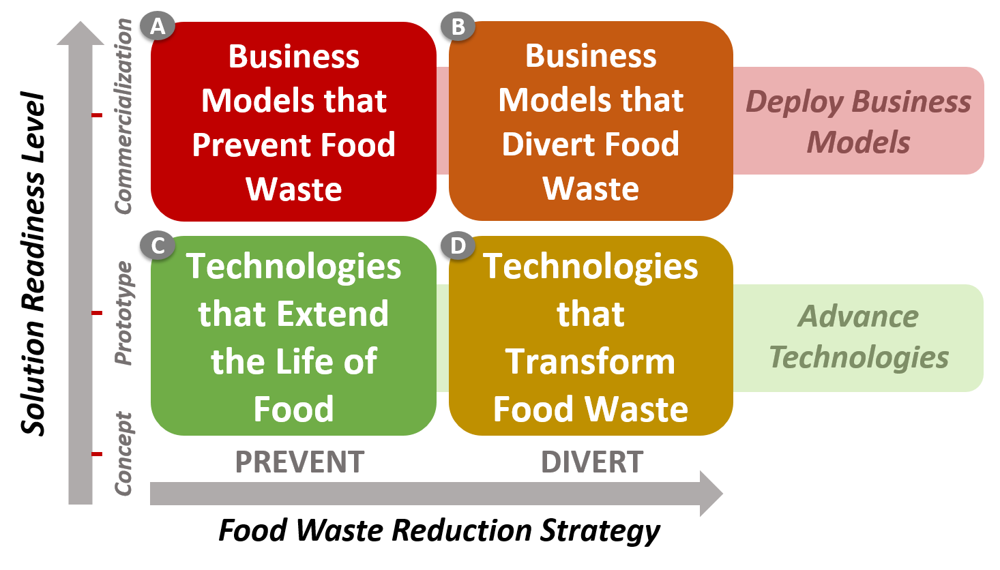

Agriculture and Agri-Food Canada
Food Waste Reduction Challenge: Novel Technologies
Back to all challenges and initiativesHome
Together, we can Reduce Food Waste, Fight Climate Change, and Strengthen our Food Systems.
The Food Waste Reduction Challenge is currently accepting applications for Streams C and D. The deadline to apply is August 31, 2021.
Transcript
[Rhythmic, upbeat music starts.]
[Assembly line workers pack boxes of tomatoes. Potatoes tumble down a ramp.]
Minister Marie-Claude Bibeau: Do you have an idea that can reduce food waste?
[Cookies are pushed down an assembly line. Glass bottles are filled on spinning racks. Foil-wrapped packages are brought up an automated ramp.]
Well, share your project…
[Minister Marie-Claude Bibeau addresses the camera from her kitchen. Text appears beneath her.]
Text on screen: The Honourable Marie-Claude Bibeau, Minister of
Agriculture and Agri-Food
… to the Government of Canada Food Waste Reduction Challenge.
[People work on their computers from home.]
The most innovative concepts…
A woman in a mask presents an idea to a small audience. A woman
presents a project while on a video call. A group of masked workers
brainstorm together.]
… will compete for a chance to win up to $2 million in prize money.
[A woman working on her computer receives exciting news and cheers.]
We are looking for solutions that are high impact…
[Restaurant and factory workers use tablets to brainstorm. A factory worker watches piles of chips go by on an assembly line.]
… innovative and transformative…
[Factory workers operate with new technologies.]
… ready to scale up…
[A farmer and an engineer in a safety vest walk past rows of crops. Cut to shots of large farm fields from above.]
… good for our environment…
[Trucks harvest potatoes from fields. Cut to an aerial view of a suburban neighbourhood.]
… and beneficial to our communities.
[A tractor makes its way down a dirt field. Text appears next to it.]
Text on screen: The facts are clear
Facts are clear. In Canada, over half of our food supply goes to
waste.
[An animation of half of a circle appears. More text appears next to
it.]
Text on screen: Over ½ of our food supply is wasted.
And yet, one out of every seven Canadian households live with food insecurity.
[A graphic of a house pops up. More text appears next to it.]
Text on screen: 1/7 households live with food insecurity.
[A montage of Canadian truckers, farmers, scientists, and citizens smile at the camera. The last woman holds a Canadian flag.]
Canadians told us loud and clear that reducing food waste should be part of the first-ever Food Policy for Canada.
[Return to Minister Bibeau addressing the camera in her kitchen.]
So I’m excited to launch the Canada Food Waste Reduction Challenge. Join us and be part of the solution.
[A paper slides over the screen. The Food Waste Reduction cycle graphic rolls out. Text appears beside it.]
Text on screen: Visit impact.canada.ca for more details
[The cycle graphic flips, revealing the graphic of an animated clock. Ticking sounds are heard. New text appears.]
Deadline for submissions: January 18, 2021
[Cut to the Canada wordmark. The rhythmic, upbeat music fades out.]
Transcript
[Animated video.]
[Cinematic music starts with piano chords, acoustic guitar and drum. Gradual build throughout.]
Narrator: This is a call to all you innovators.
[A woman slides to the left side of the screen and raises a megaphone to her mouth. A large speech bubble slides in from the right.]
[Text is revealed letter by letter.]
Text on screen: Calling all innovators! Here’s your challenge...
Narrator: We need to reduce food waste in Canada.
[The woman slides out of frame and the speech bubble takes the full screen.]
[Fresh food falls from the top of the screen and tumbles off the large text.]
[The shot pans down from the large text where wasted food has accumulated all around a garbage bin. The bin tips over to the right and spills its contents into another pile of trash.]
[Sounds of crushed food and leaking juices.]
Narrator: A recent study shows that over half of all food in Canada is wasted.
[The shot pans out to the right where the pile of trash is revealed to be a large mound. Fresh and spoiled food is scattered throughout.]
[Text slides up from behind the mound of trash.]
[Sounds: seagulls.]
Text on screen: Over half of all food is wasted
Narrator: That’s over 50 billion dollars in avoidable food losses every year...
[The shot zooms out and even larger mountains of trash slide in from all sides to form a dump. Food and paper money are scattered throughout.]
[Text slides in from the left between the mountains of trash.]
[Sounds: squealing garbage trucks and large machinery.]
Text on screen: 50 Billion $
Narrator: … meaning tons of greenhouse gas emissions from food that rots in landfills.
[The shot zooms out and the mountains of trash get taller and further.]
[Gasses start billowing up from the landfill to form a large dark cloud.]
[Deformed words appear in the gas cloud.]
Text on screen: Plus tons of GHGs.
Narrator: The impacts are simply too big to ignore.
[The shot zooms in through the clouds and a column chart appears on graph paper.]
Text on screen: Impacts
[Three columns representing the impacts rise up and take on an imposing 3D perspective. They each have a large word on them.]
[Sounds: deap daunting rumble.]
Text on screen: Social. Economic. Environmental.
Narrator: We need solutions at points all along the cycle...
[The graph slides off the screen to the right. The Food Waste Reduction Cycle rolls into frame from the left revealing text. A magnifying glass leans in over the farm icon on the Food Waste Reduction Cycle.]
Text on screen: It’s time to take action...
Narrator: ... from farm to table.
[The Food Waste Reduction Cycle rolls to the left side of the screen hiding the previous text and revealing new words. A magnifying glass leans in over the fork and knife icon on the Food Waste Reduction Cycle.]
Text on screen: ... from farm to table
Narrator: This is a call to our keenest problem solving minds.
[The Food Waste Reduction Cycle rolls out of frame to the right hiding the previous text.]
[A small group of 7 people fades into frame. Gears and speech bubbles appear over their heads. The speech bubbles merge into one and text fades in.]
[Sounds: Small crowd of people discussing amongst themselves.]
Text on screen: We need solutions that are...
Narrator: Step up with your solutions!
[The shot pans up as three lightbulbs race out from behind the crowd and twirl upwards through more gears. They light up and slow down next to three words that come in from the top.]
[Sounds: lightbulbs flickering and buzzing.]
Text on screen: Innovative. High Impact. Transformative.
Narrator: Apply to Canada’s Food Waste Reduction Challenge.
[The words and lightbulb slide out to the left. The Food Waste
Reduction Cycle rolls back into frame from the right revealing two
lines of text.]
Text on screen: Food Waste Reduction Challenge. $20M for the best
solutions to food waste.
Narrator: The deadline is January 18, 2021.
[The Food Waste Reduction Cycle flips over on itself revealing a stopwatch. The second line of text disappears revealing new text.]
[Sounds: Stopwatch ticking lowder and lowder.]
Text on screen: Food Waste Reduction Challenge. January 18, 2021.
Narrator: For more information, visit impact.canada.ca.
[The stopwatch flips over on itself revealing the Food Policy for
Canada logo. The second line of text disappears revealing new text.]
Text on screen: Food Waste Reduction Challenge. Visit
impact.canada.ca.
[The Canada wordmark fades on screen.]
[The music ends. The screen goes black.]
1. Food Waste
Food Waste refers to all food that is grown, harvested, processed, manufactured or prepared for human consumption, but never eaten by people. It occurs at all stages of the food supply chain, from farms to consumers.
In Canada and around the world, food waste continues to increase, resulting in an overuse of our natural resources such as water, soil and land, while contributing excess greenhouse gas emissions to our atmosphere. Meanwhile, a growing number of Canadians are facing food insecurity.
Over 50%
of all food in Canada is wasted every year
8%
of worldwide greenhouse gas emissions is caused by food waste
1 in 7
Canadians suffer from food insecurity
In response, Agriculture and Agri-Food Canada (AAFC), under the Food Policy for Canada, is launching the $20M Food Waste Reduction Challenge.
By encouraging more solutions to food waste in Canada, we can increase food availability, save consumers and businesses money, reduce greenhouse gas emissions, and strengthen our food systems.
2. The Challenge Streams
Food waste is a complex issue, and there is no single solution. That is why the Food Waste Reduction Challenge includes four targeted innovation streams to accelerate and advance the deployment of diverse and high-impact solutions in Canada.
Accepting applications for Challenge Streams C and D until August 31, 2021.
- Challenge Stream C: Technologies that Extend the Life of Food
- Challenge Stream D: Technologies that Transform Food Waste
Challenge Streams C and D are launching together, with innovators competing for monetary and other non-financial prizes over the next three years. These two streams, which focus on novel technologies, will have three reporting stages, during which innovators will need to demonstrate the effectiveness of their solutions. The most promising solutions will be recommended by an external review committee of subject-matter experts. Innovators will receive grant funding as well as other benefits to help them succeed. Footnote 1
3. Who Can Apply to a Challenge Stream?
Are you an innovator with a great solution that prevents and/or diverts food waste? Or are you trying to advance a technology that can extend the shelf-life of food or transform food waste? If so, the Food Waste Reduction Challenge is for you!
We have been looking for innovators of all types and sizes to apply to one of the four streams of the Food Waste Reduction ChallengeFootnote 2. International applicants with a Canadian partner or an ability to register to do business in Canada are encouraged to apply. Ideas and concepts can originate from anywhere globally, but to receive funding under the Challenge, the solutions presented in the submissions must be developed, tested, piloted, demonstrated, and deployed in Canada.
4. Which Challenge Stream Should you Apply to?
Our interactive tool should help you identify which stream is the best fit for your solution.
5. About the Challenge Streams
Streams A and B
Learn moreStreams C and D
Learn moreChallenge
The Challenge
We are currently accepting applications for Challenge Streams C and D. Application intake for these streams closes August 31, 2021.
1. Overview
Together, We Can Reduce Food Waste.
Globally, food waste accounts for 8% of the world’s greenhouse gas emissions, largely from edible food decomposing in landfills. In Canada, more than half of our food supply is wasted every year - that’s over 50 billion dollars in avoidable food waste.
Solving the problem of food waste is complex and needs a variety of solutions. That is why the Challenge includes four targeted innovation streams to accelerate and advance the deployment of diverse and high-impact solutions to food waste in Canada.
Solutions can focus on preventing or diverting food waste at any point from farm to plate and should aim to make a dramatic and measurable reduction in food waste. Challenge Streams A and B are closed for new applications. The application deadline was January 18, 2021.]. Challenge Streams C and D are open for applications until August 31, 2021.
2. The Challenge Streams
Streams A and B
Business Models Streams
Closed on January 18, 2021. You can learn more about Streams A and B here.
Challenge Streams A and B are closed for applications. They support solutions that are ready for commercialization and that provide an innovative way of doing business (i.e. a new business model) to prevent or divert food waste across any or multiple segments of the food supply chain. These streams target solutions in their early commercialization phase to accelerate their growth and expansion in the Canadian market. Successful solutions will have a high impact in reducing the volume of food waste in absolute (total volume of food saved) or relative terms (percentage of food saved).
Streams C and D
Challenge Streams C and D are open for applications until August 31, 2021. They support novel technologies at the prototyping or testing phase which extend the life of perishable food or which transform surplus food (or food by-products) that would otherwise be wasted into another product. These streams target technologies in their early development phase to accelerate their advancement and prospective deployment in the Canadian market. Successful solutions are advancing technologies to make them more effective, efficient, scalable, and competitive.
- Stream C focuses on technologies that extend the life of perishable foods by finding ways to slow the degradation of perishable food items and extend the length of time these food items may be stored before they become spoiled.
- Stream D focuses on technologies that transform food waste by converting surplus food, food by-products, or food waste into other products, including: food for humans, food for animals/insects (e.g. animal feed), or non-food products.
[Insert 2 new videos here]
3. Challenge Statement
In order to be eligible for the Food Waste Reduction Challenge, applicants’ solutions must leverage innovation to reduce food loss and waste as identified in the following Challenge statements:
Stream C: Technologies that Extend the Life of Food
Advance technologies that make perishable foods last longer; preserve food quality, safety, and nutritional value; and prevent food waste.
Stream D: Technologies that Transform Food Waste
Advance technologies that transform food waste, food by-products and/or surplus food into new foods or other products.
The field of innovation is vast under all streams. The above graphics represent a non-exhaustive list of examples provided below illustrates the breadth of the solutions space for Streams C and D.
4. Challenge objectives & assessment criteria of streams C and D
AAFC is calling on innovators to submit an application for solutions based on novel technologies that:
| Criteria | Description |
|---|---|
| 1. Are measurably effective | They extend shelf life or productively transform food waste into a new item. |
| 2. Are innovative and potentially transformative | novel technologies that help open a new way forward. |
| 3. Could be scaled up | There are many different ways the technology could be used (e.g., types of food covered, range of contexts). |
| 4. Have market potential | There is a demand for the technology |
| 5. Are financially sustainable | The solution will create economic and financial benefits |
| 6. Improve our environment | Reducing food waste means shrinking our greenhouse gas footprint and conserving natural resources. |
| 7. Keep our food safe and nutritious | Solution supports access to safe, nutritious, and high-quality food. |
5. Key Dates for Challenge Streams C and D
-
Stage 1 - Concept Application
Challenge Streams C and D are launched, and application intake is until August 31, 2021. Up to 18 Semi-Finalists with the most promising solutions across both streams will receive approximately $100,000 in Fall 2021 and move on to Stage 2.
-
Stage 2 - Prototype
Beginning in Fall 2021, Semi-Finalists will build or complete an existing prototype of your technology. Up to 6 Semi-Finalists with the most impressive results from Stage 2 will receive approximately $450,000 in Fall 2022 and will move on to become Stage 3 Finalists.
-
Stage 3 - Prototype Ready and Testing
Finalists at this stage will advance their prototype and test their technology in an operational environment with at least one implementation partner. Up to two Finalists with the most impressive results from Stage 3 will receive approximately $1,000,000 in Winter 2023 and become a Grand Prize Winner for The Food Waste Reduction Challenge – Streams C and D.
Note: The number of winners and prize amounts are approximations and may vary depending on the applications received. Please see the Applicant Guide [Insert Hyperlink] for detailed instructions about applying to Challenge Streams C and D.
6. Eligible Applicants for Challenge Streams C and D
The Food Waste Reduction Challenge is open to commercial and non-commercial organizations and individuals registered to do business in Canada. Specifically you can apply if you are:
- A business and/or social enterprise of any size;
- A not-for-profit and/or charitable organization;
- An Indigenous organization and/or group;
- A post-secondary/academic institution; or
- An Individual or group of individuals
International applicants with a Canadian partner or an ability to register to do business in Canada are encouraged to apply. Ideas and concepts can originate from anywhere globally, but to receive funding under the Challenge, the solutions presented in the submissions must be tested, piloted, demonstrated, and deployed in Canada.
The Applicant Guide for Streams C and D provides more details about the eligibility criteria for these streams.
7. Challenge Stream Selection Tool
Our interactive tool should help you identify which stream is the best fit for your solution.
Select your streamProcess and prizes
Process & prizes
-
Stage 1 – Application Intake for Streams C and D
Summer 2021
Applicants with solutions based on novel technologies to extend the life of food or transform food waste are invited to apply to Streams C and D. The deadline to apply is August 31, 2021 at 11:59 Pacific Daylight Time. At this stage of the challenge, applicants are competing for approximately $100,000 in grant funding and the chance to become a Semi-Finalist entering Stage 2 of the competition.
-
Stage 2 – Up to 18 Semi-Finalists Will Develop Prototypes
Fall 2021
Up to 18 applicants will be selected to participate in Stage 2 of the challenge. These Semi-Finalists will have eight months to build or complete an existing prototype of their technology. At this stage, Semi-Finalists are competing for approximately $450,000 and the chance to compete in Stage 3 of the competition.
-
Stage 3 – Up to 6 Finalists Will Demonstrate the Effectiveness of their Solutions
Fall 2022
Up to 6 Finalists will be selected to participate in Stage 3. At this stage, Finalists have one year to advance their prototypes and test them in an operational environment with at least one implementation partner. They will also evaluate the effectiveness of their solutions by measuring and reporting against the assessment criteria.
Finalists at this stage are competing to become one of two Grand Prize Winners who will receive approximately $1,500,000 in grant funding. Other non-monetary benefits may also be offered to participants.
-
Grand Prize Winners Selected
Winter 2023
Two Grand Prize Winners will be selected from among the Finalists and announced in Winter 2023.
Note: The number of winners and prize amounts may vary. Please refer to the applicant guide for a more detailed description of the application process, prize amounts and challenge stages.
Connect
Connect with us
Use the hashtag #FoodWaste to join the conversation and get the latest updates on the Food Waste Reduction Challenge. You can also email us at aafc.fwrc-drga.aac@canada.ca your questions and we will get back to you within two business days.
-
Sign up to our newsletter
Food Waste Reduction Challenge Streams C and D
Who can apply
- Businesses and social enterprises of any size;
- Not-for-profit and charitable organizations;
- Indigenous organizations and groups;
- Post-secondary/academic institutions;
- Individuals or group of individuals
International applicants with a Canadian partner or an ability to register to do business in Canada are encouraged to apply.
Key dates
- August 31, 2021
Stage 1 - Concept application deadline - Fall 2021
Up to 18 semi-finalists announced - Fall 2022
Stage 2 - Up to 12 finalists announced - Winter 2023
Stage 3 - Grand Prize Winners accounced
Prizes
- $100,000
Up to 18 semi-finalists will be selected in Stage 1 and will receive approximately $100,000. - $450,000
Semi-finalists will move into Stage 2 and compete for a chance to be a finalists and receive approximately $450,000. - $1,500,000
Up to 6 finalists will compete in Stage 3 to win one of two Grand Prizes of up to $1,500,000.